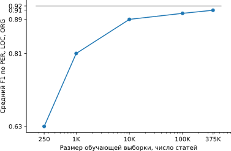

Natasha — качественное компактное решение для извлечения именованных сущностей из новостных статей на русском языке
Библиотека Natasha решает базовые задачи обработки естественного русского языка: сегментация на токены и предложения, морфологический и синтаксический анализ, лемматизация, извлечение именованных сущностей. Для новостных статей качество на всех задачах сравнимо или превосходит существующие решения. Библиотека поддерживает Python 3.5+ и PyPy3, не требует GPU, зависит только от NumPy.
В этой статье разберёмся, как Natasha решает задачу извлечения именованных сущностей. Стенд демонстрирует поиск подстрок с именами, названиями топонимов и организаций:
Задача извлечения именованных сущностей (NER) старая и хорошо изученная.
Для английского языка с 1997 года проводятся соревнования: MUC-7, CoNLL-2003, OntoNotes 5. Существует масса коммерческих и открытых решений: Spacy, Stanford NER, OpenNLP, NLTK, MITIE, Google Natural Language API, ParallelDots, Aylien, Rosette, TextRazor.
Для русского тоже есть бенчмарки: Collection5, Gareev, factRuEval-2016, WiNER, BSNLP-2019. Решения в основном закрытые: DaData, Pullenti, Abbyy Infoextractor, Dictum, Eureka, Promt, RCO, Ahunter.
В конце 2018 года после статьи от Google про BERT в англоязычном NLP случился большой прогресс. В 2019 ребята из проекта DeepPavlov адаптировали мультиязычный BERT для русского, появился RuBERT. Поверх обучили CRF-голову, получился DeepPavlov BERT NER — SOTA для русского языка. У модели великолепное качество, в 2 раза меньше ошибок, чем у ближайшего преследователя DeepPavlov NER, но размер и производительность пугают: 6ГБ — потребление GPU RAM, 2ГБ — размер модели, 13 статей в секунду — производительность на хорошей GPU.
В 2020 году в проекте Natasha нам удалось вплотную приблизится по качеству к DeepPavlov BERT NER, размер модели получился в 75 раз меньше (27МБ), потребление памяти в 30 раз меньше (205МБ), скорость в 2 раза больше на CPU (25 статей в секунду).
| Natasha (Slovnet NER) | DeepPavlov BERT NER | |
|---|---|---|
| PER/LOC/ORG F1 по токенам, среднее по Collection5, factRuEval-2016, BSNLP-2019, Gareev | 0.97/0.91/0.85 | 0.98/0.92/0.86 |
| Размер модели | 27МБ | 2ГБ |
| Потребление памяти | 205МБ | 6ГБ (GPU) |
| Производительность, новостных статей в секунду (1 статья ≈ 1КБ) | 25 на CPU (Core i5) | 13 на GPU (RTX 2080 Ti), 1 на CPU |
| Время инициализации, секунд | 1 | 35 |
| Python 3.5+, PyPy3 | Python 3.6+ | |
| NumPy | TensorFlow |
Как получить такой результат? Короткий рецепт:
Natasha (Slovnet NER) = Slovnet BERT NER — аналог DeepPavlov BERT NER + дистилляция через синтетическую разметку (Nerus) в WordCNN-CRF c квантованными эмбеддингами (Navec) + движок для инференса на NumPy.
Теперь по порядку. План такой: обучим тяжёлую модель c BERT-архитектурой на небольшом вручную аннотированном датасете. Разметим ей корпус новостей, получится большой грязный синтетический тренировочный датасет. Обучим на нём компактную примитивную модель. Этот процесс называется дистилляцией: тяжёлая модель — учитель, компактная — ученик. Рассчитываем, что BERT-архитектура избыточна для задачи NER, компактная модель несильно проиграет по качеству тяжёлой.
В проекте Natasha библиотека Slovnet занимается обучением и инференсом современных моделей для русскоязычного NLP. Используем Slovnet для подготовки моделей учителя и ученика.
Модель-учитель
DeepPavlov BERT NER состоит из RuBERT-энкодера и CRF-головы. Наша тяжёлая модель-учитель повторяет эту архитектуру с небольшими улучшениями.
Все бенчмарки измеряют качество NER на текстах новостей. Дообучим RuBERT на новостях. В репозитории Corus собраны ссылки на публичные русскоязычные новостные корпуса, в сумме 12 ГБ текстов. Используем техники из статьи от Facebook про RoBERTa: большие агрегированные батчи, динамическая маска, отказ от предсказания следующего предложения (NSP). RuBERT использует огромный словарь на 120 000 сабтокенов — наследие мультиязычного BERT от Google. Сократим размер до 50 000 самых частотных для новостей, покрытие уменьшится на 5%. Получим NewsRuBERT, модель предсказывает замаскированные сабтокены в новостях на 5 процентных пунктов лучше RuBERT (63% в топ-1).
Обучим NewsRuBERT-энкодер и CRF-голову на 1000 статей из Collection5. Получим Slovnet BERT NER, качество на 0.5 процентных пункта лучше, чем у DeepPavlov BERT NER, размер модели меньше в 4 раза (473МБ), работает в 3 раза быстрее (40 статей в секунду).
NewsRuBERT = RuBERT + 12ГБ новостей + техники из RoBERTa + 50K-словарь.
Slovnet BERT NER (аналог DeepPavlov BERT NER) = NewsRuBERT + CRF-голова + Collection5.
- С PyTorch 1.4 реализация NewsRuBERT занимает 100 строк на Python;
- Сравнение качества и производительности DeepPavlov BERT NER, Slovnet BERT NER и других решений задачи NER для русского языка.
Синтетический датасет
Разметим 700 000 статей из корпуса Lenta.ru тяжёлой моделью. Получим огромный синтетический обучающий датасет. Архив доступен в репозитории Nerus проекта Natasha. Разметка очень качественная, оценки F1 по токенам: PER — 99.7%, LOC — 98.6%, ORG — 97.2%. Редкие примеры ошибок:
Выборы Верховного совета Аджарской автономной республики назначены в соответствии с 241-ой статьей и 4-м пунктом 10-й статьи Конституционного закона Грузии О статусе Аджарской автономной республики.
Следственное управление при прокуратуре требует наказать премьера Якутии.
Страны Азии и Африки поддержали позицию России в конфликте с Грузией.
Как сообщили в четверг корреспонденту Агентства национальных новостей в следственном управлении, еще 16 мая 2007 г. прокуратурой Якутии было возбуждено уголовное дело № 66144 по признакам преступления, предусмотренного ч. 4 ст. 159 УК РФ по факту причинения имущественного ущерба в размере 30 млн руб. государственному унитарному предприятию "Дирекция по строительству железной дороги "Беркакит-Томмот-Якутск"".
У Владимира Стржалковского появится помощник - специалист по проведению сделок M&A.
Начальник полигона твердых бытовых отходов "Игумново" в Нижегородской области осужден за загрязнение атмосферы и грунтовых вод.
Постоянный Секретариат ОССНАА в Каире в пятницу заявил: Когда Саакашвили стал президентом Грузии, он проявил стремление вступить в НАТО, Европейский Союз и установить более близкие отношения с США.
Модель-ученик
С выбором архитектуры тяжёлой модели-учителя проблем не возникло, вариант один — трансформеры. С компактной моделью-учеником сложнее, вариантов много. С 2013 до 2018 год с появления word2vec до статьи про BERT, человечество придумало кучу нейросетевых архитектур для решения задачи NER. У всех общая схема:
Комбинаций архитектур много. Какую выбрать? Например, (CharCNN + Embedding)-WordBiLSTM-CRF — схема модели из статьи про DeepPavlov NER, SOTA для русского языка до 2019 года.
Варианты с CharCNN, CharRNN пропускаем, запускать маленькую нейронную сеть по символам на каждом токене — не наш путь, слишком медленно. WordRNN тоже хотелось бы избежать, решение должно работать на CPU, перемножать матрицы на каждом токене медленно. Для NER выбор между Linear и CRF условный. Мы используем BIO-кодировку, порядок тегов важен. Приходится терпеть жуткие тормоза, использовать CRF. Остаётся один вариант — Embedding-WordCNN-CRF. Такая модель не учитывает регистр токенов, для NER это важно, "надежда" — просто слово, "Надежда" — возможно, имя. Добавим ShapeEmbedding — эмбеддинг с очертаниями токенов, например: "NER" — EN_XX, "Вайнович" — RU_Xx, "!" — PUNCT_!, "и" — RU_x, "5.1" — NUM, "Нью-Йорк" — RU_Xx-Xx. Схема Slovnet NER — (WordEmbedding + ShapeEmbedding)-WordCNN-CRF.
Что такое CharCNN, CharRNN, WordCNN, WordRNN, CRF? Основные статьи на тему:
- 2009 Ratinov, Design Challenges and Misconceptions in Named Entity Recognition — обзор донейросетевых методов;
- 2011 Collobert, Natural Language Processing (almost) from Scratch — первое применение сетей, знаковая работа, автор всё придумал уже 10 лет назад;
- 2015 Huang, Bidirectional LSTM-CRF Models for Sequence Tagging — первое примение WordBiLSTM-CRF;
- 2016 Ling, Compositional Character Models for Open Vocabulary Word Representation — CharBiLSTM;
- 2016 Chiu, Nichols, Named Entity Recognition with Bidirectional LSTM-CNNs — CharCNN;
- 2016 Ma, Hovy, End-to-end Sequence Labeling via Bi-directional LSTM-CNNs-CRF — CharCNN-WordBiLSTM-CRF;
- 2016 Lampe, Neural Architectures for Named Entity Recognition — WordStackLSTM, экзотический вариант, используется в SpaCy;
- 2017 Yang, Transfer learning for sequence tagging with hierarchical recurrent networks — первые попытки применить transfer learing;
- 2018 Peters, Deep contextualized word representations — transfer learing через language modeling;
- 2019, Small and Practical BERT Models for Sequence Labeling — BERT;
Дистилляция
Обучим Slovnet NER на огромном синтетическом датасете. Сравним результат с тяжёлой моделью-учителем Slovnet BERT NER. Качество считаем и усредняем по размеченным вручную Collection5, Gareev, factRuEval-2016, BSNLP-2019. Размер обучающей выборки очень важен: на 250 новостных статьях (размер factRuEval-2016) средний по PER, LOC, LOG F1 — 0.64, на 1000 (аналог Collection5) — 0.81, на всём датасете — 0.91, качество Slovnet BERT NER — 0.92. Примитивная модель-ученик на 1 процентный пункт хуже тяжёлой модели-учителя. Это замечательный результат. Напрашивается универсальный рецепт:
Вручную размечаем немного данных. Обучаем тяжёлый трансформер. Генерируем много синтетических данных. Обучаем простую модель на большой выборке. Получаем качество трансформера, размер и производительность простой модели.
В библиотеке Slovnet есть ещё две модели обученные по этому рецепту: Slovnet Morph — морфологический теггер, Slovnet Syntax — синтаксический парсер. Slovnet Morph отстаёт от тяжёлой модели-учителя на 2 процентных пункта, Slovnet Syntax — на 5. У обеих моделей качество и производительность выше существующих решений для русского на новостных статьях.

Квантизация
Размер Slovnet NER — 289МБ. 287МБ занимает таблица с эмбеддингами. Модель использует большой словарь на 250 000 строк, он покрывает 98% слов в новостных текстах. Используем квантизацию, заменим 300-мерные float-вектора на 100-мерные 8-битные. Размер модели уменьшится в 10 раз (27МБ), качество не изменится. Библиотека Navec — часть проекта Natasha, коллекция квантованных предобученных эмбеддингов. Веса обученные на художественной литературе занимают 50МБ, обходят по синтетическим оценкам все статические модели RusVectores.
Инференс
Slovnet NER использует PyTorch для обучения. Пакет PyTorch весит 700МБ, не хочется тянуть его в продакшн для инференса. Ещё PyTorch не работает с интерпретатором PyPy. Slovnet используется в связке с Yargy-парсером аналогом яндексового Tomita-парсера. С PyPy Yargy работает в 2-10 раз быстрее, зависит от сложности грамматик. Не хочется терять скорость из-за зависимости от PyTorch.
Стандартное решение — использовать TorchScript или сконвертировать модель в ONNX, инференс делать в ONNXRuntime. Slovnet NER использует нестандартные блоки: квантованные эмбеддинги, CRF-декодер. TorchScript и ONNXRuntime не поддерживают PyPy.
Slovnet NER — простая модель, вручную реализуем все блоки на NumPy, используем веса, посчитанные PyTorch. Применим немного NumPy-магии, аккуратно реализуем блок CNN, CRF-декодер, распаковка квантованного эмбеддинга занимает 5 строк. Скорость инференса на CPU такая же как с ONNXRuntime и PyTorch, 25 новостных статей в секунду на Core i5.
Техника работает на более сложных моделях: Slovnet Morph и Slovnet Syntax тоже реализованы на NumPy. Slovnet NER, Morph и Syntax используют общую таблицу эмбеддингов. Вынесем веса в отдельный файл, таблица не дублируется в памяти и на диске:
>>> navec = Navec.load('navec_news_v1_1B.tar') # 25MB
>>> morph = Morph.load('slovnet_morph_news_v1.tar') # 2MB
>>> syntax = Syntax.load('slovnet_syntax_news_v1.tar') # 3MB
>>> ner = NER.load('slovnet_ner_news_v1.tar') # 2MB
# 25 + 2 + 3 + 2 вместо 25+2 + 25+3 + 25+2
>>> morph.navec(navec)
>>> syntax.navec(navec)
>>> ner.navec(navec)
Использование
Инструкция по установке, пример использования, документация — в репозитории библиотеки Natasha.
Natasha объединяет под одним интерфейсом другие библиотеки проекта. Natasha хороша для демонстрации технологий. В работе стоит использовать низкоуровневые библиотеки напрямую:
- Razdel — сегментация текста на предложения и токены;
- Navec — качественный компактные эмбеддинги;
- Slovnet — современные компактные модели для морфологии, синтаксиса, NER;
- Yargy — правила и словари для извлечения структурированной информации;
- Ipymarkup — визуализация NER и синтаксической разметки;
- Corus — коллекция ссылок на публичные русскоязычные датасеты;
- Nerus — большой корпус с автоматической разметкой именованных сущностей, морфологии и синтаксиса.
Natasha извлекает стандартные сущности: имена, названия топонимов и организаций. Решение показывает хорошее качество на новостях. Как работать с другими сущностями и типами текстов? Нужно обучить новую модель. Сделать это непросто. За компактный размер и скорость работы мы платим сложностью подготовки модели. Скрипт-ноутбук для подготовки тяжёлой модели учителя, скрипт-ноутбук для модели-ученика, инструкции по подготовке квантованных эмбеддингов.
 natural_language_processing — чат пользователей, разработчиков проекта.
natural_language_processing — чат пользователей, разработчиков проекта.

 kuk
kuk
Лаборатория разрабатывает сервисы и коробочные продукты с использованием технологии Natasha, оказывает услуги анализа данных для российских компаний.